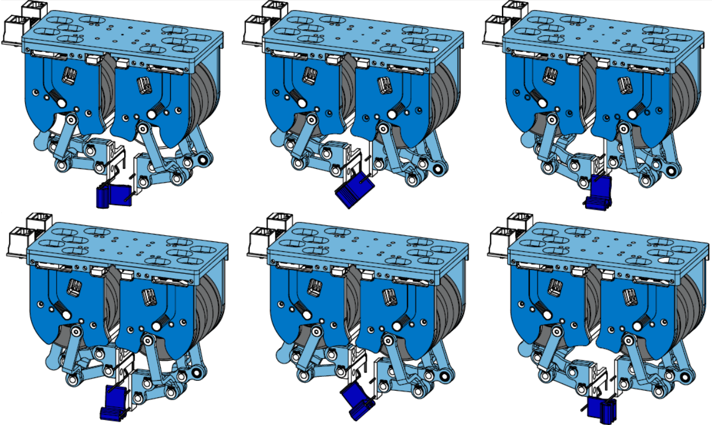

|
Yuemin Mao I am a 2nd-year Ph.D. student at the Robotics Institute, Carnegie Mellon University, advised by Prof. Jeffrey Ichnowski. My research interest lies in robotic manipulation. In 2023, I completed my bachelor's degree in Mechanical Engineering with an additional major in Robotics at Carnegie Mellon University. During my undergraduate years, I worked on extrinsic dexterous manipulation at the Manipulation Lab (MLab), advised by Prof. Matthew T. Mason Email / Google Scholar / GitHub / Twitter / LinkedIn |

|
News |
|
Sept '23 |
Started my Ph.D. study at the Robotics Institute, Carnegie Mellon University. |
|
May '23 |
Graduated from Carnegie Mellon University. |
Research |
|
|
Residual-NeRF: Learning Residual NeRFs for Transparent Object Manipulation
Bardienus P. Duisterhof, Yuemin Mao, Si Heng Teng, Jeffrey Ichnowski IEEE International Conference on Robotics and Automation (ICRA), 2024 project website / paper / video / code |
Autogenerated Manipulation Primitives
Eric Huang, Xianyi Cheng, Yuemin Mao, Arnav Gupta, Matthew T. Mason The International Journal of Robotics Research (IJRR), 2023 paper |
Residual-NeRF: Learning Residual NeRFs for Transparent Object Manipulation
Eric Huang, Xianyi Cheng, Yuemin Mao, Arnav Gupta, Matthew T. Mason IEEE International Conference on Robotics and Automation (ICRA), 2024 project website / paper / video / code |
 |
Extrinsic Dexterous Manipulation with a Direct-drive Hand: A Case Study
Arnav Gupta*, Yuemin Mao*, Ankit Bhatia*, Xianyi Cheng, Jonathan King, Yifan Hou, Matthew T. Mason IEEE/RSJ International Conference on Intelligent Robots and Systems (IROS), 2022 paper / video |
|
Modified from template. |